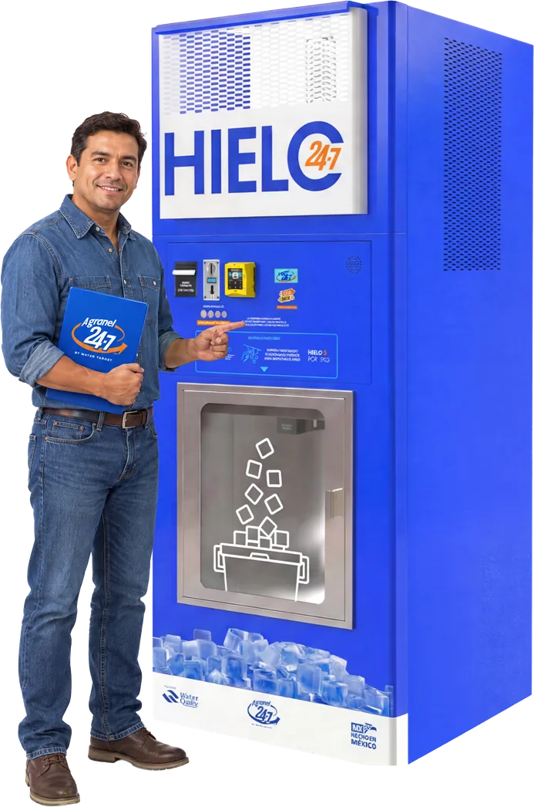
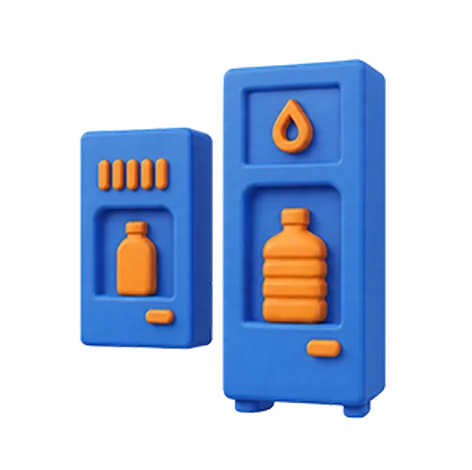

¿Tu empresa
está lista para
el crecimiento?
Buscamos empresas con experiencia comercial, presencia regional y capacidad para desarrollar nuevos negocios.
Nuestro programa está dirigido a distribuidores que cuentan con una cartera de clientes y pueden brindar atención y seguimiento antes y después de la venta.
Si ya comercializas equipos de agua, purificación, vending o productos relacionados, puedes incorporar A Granel 24-7 a tu portafolio.

Ventajas de ser distribuidor
Forma parte de A Granel 24-7 y lleva nuestras soluciones a nuevos clientes en tu región,
respaldado por una marca con experiencia en el desarrollo de modelos de negocio vending.

Negocio de alto
potencial
Representa una marca reconocida y desarrolla clientes en tu ciudad o estado.

Amplio portafolio
de equipos
Kiosko Dúo Agua & Hielo, ventana de productos de limpieza y ventana de croquetas para mascotas.
Acompañamiento
comercial
Te acompañamos antes, durante y después de cada proyecto con asesoría y soporte especializado.
Capacitación
especializada
Aprende a vender, instalar, poner en operación y dar servicio técnico a los equipos.
Los 6 pasos
para comenzar
Nuestro proceso de incorporación está diseñado para conocer tu perfil, tus objetivos y establecer las bases para una colaboración comercial.
Durante el proceso conocerás nuestro modelo de negocio, nuestro portafolio de equipos y las herramientas disponibles para desarrollar tu actividad comercial.
Desde tu solicitud hasta la activación, te acompañamos en cada etapa para que estés listo para comenzar a desarrollar tu mercado como distribuidor.
- Envía tu solicitud
- Evaluación de tu perfil
- Entrevista
- Firma de contrato
- Capacitación
- Activación

Preguntas frecuentes
No es indispensable. Nosotros te capacitamos para vender, instalar, poner en operación y brindar servicio técnico a los equipos.
Sí, podrás comercializar las líneas autorizadas por A Granel 24-7.
Sí. Contarás con asesoría técnica y respaldo del fabricante.
El modelo es de distribución autorizada no exclusiva. Cualquier acuerdo de exclusividad se establece únicamente mediante un convenio independiente.
Completar el proceso de evaluación, firmar el contrato de distribución y recibir la capacitación correspondiente.